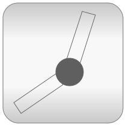
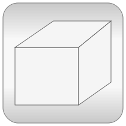

Library MultiBody is a free Modelica package providing 3-dimensional mechanical components to model in a convenient way mechanical systems, such as robots, mechanisms, vehicles. Typical animations generated with this library are shown in the next figure:

For an introduction, have especially a look at:
Copyright © 1998-2015, Modelica Association and DLR.
This Modelica package is free software and the use is completely at your own risk; it can be redistributed and/or modified under the terms of the Modelica License 2. For license conditions (including the disclaimer of warranty) see Modelica.UsersGuide.ModelicaLicense2 or visit https://www.modelica.org/licenses/ModelicaLicense2.
| Name | Description |
|---|---|
| User's Guide of MultiBody Library | |
| World coordinate system + gravity field + default animation definition | |
| Examples that demonstrate the usage of the MultiBody library | |
| Components that exert forces and/or torques between frames | |
| Functions to transform rotational frame quantities | |
| Connectors and partial models for 3-dim. mechanical components | |
|  Joints | Components that constrain the motion between two frames |
| Rigid components such as bodies with mass and inertia and massless rods | |
| Sensors to measure variables | |
|  Visualizers | 3-dimensional visual objects used for animation |
| Constants and types with choices, especially to build menus | |
| Icons for MultiBody package |